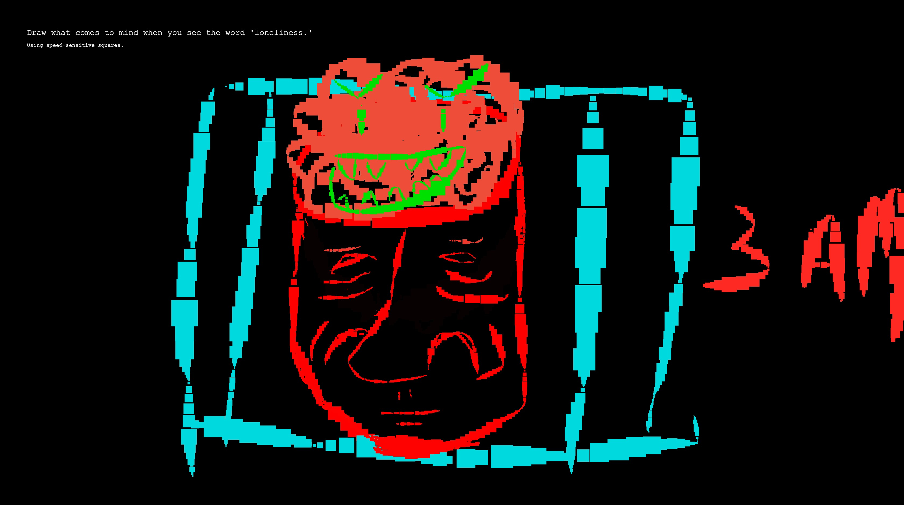
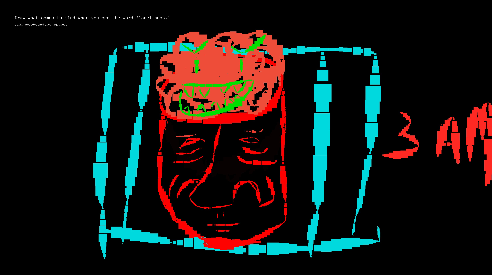

Draw Your Loneliness
Undergraduate Graphic Design Thesis Project, 2021
Being alone and feeling lonely is like being in a dense fog where it is hard to see past ourselves and reach out to others. As daunting as it might seem, loneliness is not such a terrifying feeling if we face it head on.
Draw Your Loneliness is my year-long undergraduate graphic design thesis project, done in isolation due to COVID-19. It is a website that sets out to help its visitors face this terrifying feeling; to find peace and happiness in times of aloneness and loneliness. Using digital drawing and self-expression, we can make peace with these difficult feelings by making them visible, examinable, and less ominous. Draw Your Loneliness offers a way to connect with others who might have similar experiences as us by sharing our art and knowing that, in a way, we are not alone in our loneliness.
I invite you to experience the website and face these feelings, view all the artworks that people have submitted, or submit one of your own! Visit Draw Your Loneliness at eldrinb.github.io/drawyourloneliness/ (Note that this is best viewed on a desktop). Submissions are always welcome and appreciated.
Motivation
This project was conceptualized due to my own overwhelming feelings of isolation while studying during the pandemic. In Fall 2020, I was able to express my experiences visually through smaller projects, which allowed me to better understand my relationship with aloneness and helped me realized that I had made peace loneliness. In doing so, I realized that visual expression and communication with my peers is a strong method of finding peace and happiness in these times.
Goals
The project relates to the topic of finding peace in times of aloneness and loneliness as it attempts to help visitors by making them reflect and visualize these feelings. Using a drawing tool built on P5.js, visitors can express their thoughts thanks to prompts that are given by the tool
The goal is to help visitors realize that being alone and lonely is not such a terrifying feeling if they face it head on. And having a dedicated gallery to show off other people’s drawings ensures that visitors know that they are not alone in their aloneness and loneliness.
Design Process
The following is the process of work culminated in Draw Your Loneliness. This is a product of love and a school-years' worth of work done in isolation. Working remotely directly informs why I chose the topic of loneliness as it is truly relevant to our time and it is something I was personally affected by.

Fall Semester 2020
At the beginning of September 2020, I was able to express my pandemic experiences visually through smaller projects, which allowed me to better understand my relationship with being alone. This helped me realize that I had made peace with loneliness thanks to art and self-expression. Doing so allowed me to formulate my topic, which is to help people find peace in times of aloneness and loneliness.

Throughout this semester, I conducted research on what loneliness means, how it happens, what it does to people, and what we can do to combat it. Alongside this is figuring out a way to execute my ideas that will help people feel less alone in their loneliness. Through plenty of ideation (as seen on the right), I was able to land on the idea of creating a website that featured a drawing tool and a gallery where people to share their drawings of self-expression.
Thanks to my peers, I discovered a related project called the Contemplative Drawing Machine, which helps people alleviate boredom, creative blocks, need for self-expression, etc. through digital drawing. Discovering this helped me realize I already had the knowledge to build a similar platform for drawing using code.
Using P5.js, a JavaScript language for creative coding, I was able to create a prototype to draw using a set of drawing tools from randomized drawing prompts. Much of the term was dedicated to making sure the code works, and for it to be intuitive and engaging. Alongside this, I worked on creating a prototype website on Adobe XD before coding it, which I have reserved for the following semester.
The image on the left are screenshots of some major milestones for coding the drawing tool on P5.js. It was challenging to make sure all the various aspects of the code work well together, such as randomizing the prompt, changing the shape based on what was randomly provided, changing the size as the mouse moves, and making the colour slider work.
Winter Semester 2021
At the beginning of 2021, I worked on transforming the Adobe XD prototype into a fully functioning website. At the time, the priority was to simplify the website, and make the experience intuitive, enjoyable, and memorable through code.
For example, I reworked the gallery so visitors can interact with the drawings by dragging through them as if they were sifting through the fog of loneliness to find beacons that share their own feelings. The same goes for the ‘about page’ where visitors can read what Draw Your Loneliness is about as they light up the void with colour.
By March 2021, I had finalized much of the drawing tool built on ‘P5.js,’ the interactive gallery, and the about pages. Thanks to the feedback of my peers and instructor, I continued to refine the website’s functionality, visual aesthetic, and experience. Around this time, I also began user testing and gathering submissions from my peers to populate the gallery with drawings. Below are some of the submissions!
The rest of the term had been dedicated to building up for GradEx 106, OCAD (Ontario College of Art & Design) University’s annual graduate exhibition which Draw Your Loneliness will be highlighted in. Preparation for this includes creating a storyboard for the trailer (seen on the right), the trailer itself, presentation / promotional materials, and further refinement of the website.
 

The Loneliness Project by Marissa Korda
This is a digital space where people can share written stories of their experiences with loneliness and see others’ as well.
Contemplative Drawing Machine
This is a tool that allows the mind to “treat creative blockage, boredom or deep, unmet needs for self-expression through digital drawing” using a combination of randomness and restriction.

Distant Socializing by Vamoss
This is a fun and timely interactive sketch that shows both isolation and connection that the COVID-19 brought. It was built on OpenProcessing, which uses the same language / library as P5.js.
(The emojis within the sketch didn't seem to work when I took this screenshot)
Loneliness by Jordan Magnuson
This is a game that lets the player reflect on the feeling of loneliness as they travel forward through the wordless narrative.
Self-Portrait by Andy Chung
This project isn’t about loneliness but I interpreted it in a way that does relate to the feeling and Draw Your Loneliness. It is meditative — the short bursts of dialogue that the character produces when you perform simple interactions, like sitting on the ground, shows that they are at peace with themselves and are living in the moment. They are alone and we can only see a small section of their world, but they appreciate that it’s a nice day, that the flowers are in bloom, or that taking a break is important.
Annotated Bibliography
Cherry, Kendra. “How Art Therapy is Used to Help People Heal.” Verywellmind, 11 May 2020.
This article outlines what art therapy is, how it is used, and how it can help the mind and body to heal from mental/emotional stress. While this isn’t related to loneliness, Draw Your Loneliness is art therapy and this article helped inform that.
Cherry, Kendra. “The Health Consequences of Loneliness.” Verywellmind, 23 Mar. 2020.
This article outlines what loneliness is, its causes, how it can negatively affect the body, and what you can do to prevent/overcome it.
Contemplative Drawing Machine.
The Contemplative Drawing Machine (CMD) is a tool that allows the mind to “treat creative blockage, boredom or deep, unmet needs for self-expression through digital drawing” using a combination of randomness and restriction. This served as a major breakthrough for me as it allowed me to figure out how I could output my topic—through a digital drawing tool and a gallery.
Korda, Marissa. The Loneliness Project
This project is a digital space where people can share written stories of their experiences with loneliness and see others’ as well. It served as a major inspiration in the beginning as it produces similar outputs by asking people to reflect on loneliness through words.
Julle-Daniere, Eglantine. “Being Alone vs. Being Lonely.” Psychology Today, 16 Apr. 2020.
This article details why people are being placed into a mode of self-isolation in light of COVID-19. It is relevant to my research as it helps me better understand how to make isolation into a positive experience by keeping the body and mind active.
“Loneliness Q&A.” 7 Cups.
This is a forum for people who have questions and stories about loneliness. Reading through it is relevant to my research as it allows me to understand other people’s wonderful thoughts, insights, and solutions about the topic.
Oppong, Thomas. “How to Be Happy Alone, But Not Lonely.” Medium, 1 Apr. 2020.
This article describes how loneliness is a mindset that we are in full control of. This is relevant to my research as finding happiness in aloneness and making peace with loneliness is completely dependent on our acceptance of the situation (in COVID-isolation or otherwise).
Renken, Elena. “Most Americans Are Lonely, And Our Workplace Culture May Not Be Helping.” NPR, 23 Jan. 2020.
This article details statistics on the rising levels of loneliness within American workers based on a study conducted by Cigna.
Sun, Jonny. “You are not alone in your loneliness.” TED, Apr 2019.
This TED Talk is about making peace with loneliness by forging new connections with those who also feel lonely. This is relevant to my research as it emphasizes community and how people can open up to/create bonds with strangers who understand each other’s loneliness.
“The Art of Being Alone.” Farnam Street Media.
This article treats loneliness as an opportunity for people to find connection and a sense of fulfillment through creative outputs. This is relevant to my research as expressing one’s loneliness through art can help us understand our relationship with those feelings, and thus make peace with it.